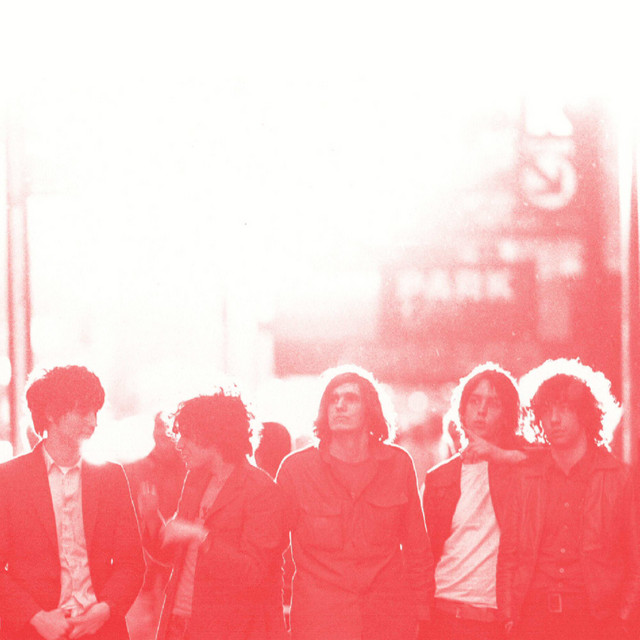
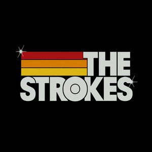

Historia

The Strokes es una banda de rock estadounidense formada en 1998 en Nueva York, que fue uno de los grupos mas influyentes de la decada de 2000, gracias a su sonido indie rock.
Discografia
· Is This It (2001)
· Room on Fire (2003)
· First Impressions of Earth (2006)
· The New Abnormal (2020)

Integrantes

· Julian Casablancas - voz
· Nick Valensi - guitarra
· Albert Hammond Jr. - guitarra
· Nikolai Fraiture - bajo
· Fabrizio Moretti - bateria